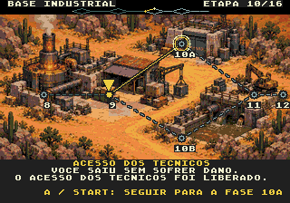
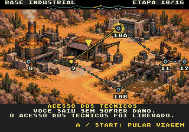

PLAGUEFALL / IMPLEMENTADO NA ROM
Rodapé aprovado, agora no jogo.
Nome da fase e explicações centralizados. Comandos à direita, com margem de 8 px. Capturas reais da ROM em 320 × 224.
Antes de seguir
Durante a viagem
23 transições por sistema8 resultados de bifurcação2 campanhas completas por sistemaConteúdo, alinhamento e paletas verificados